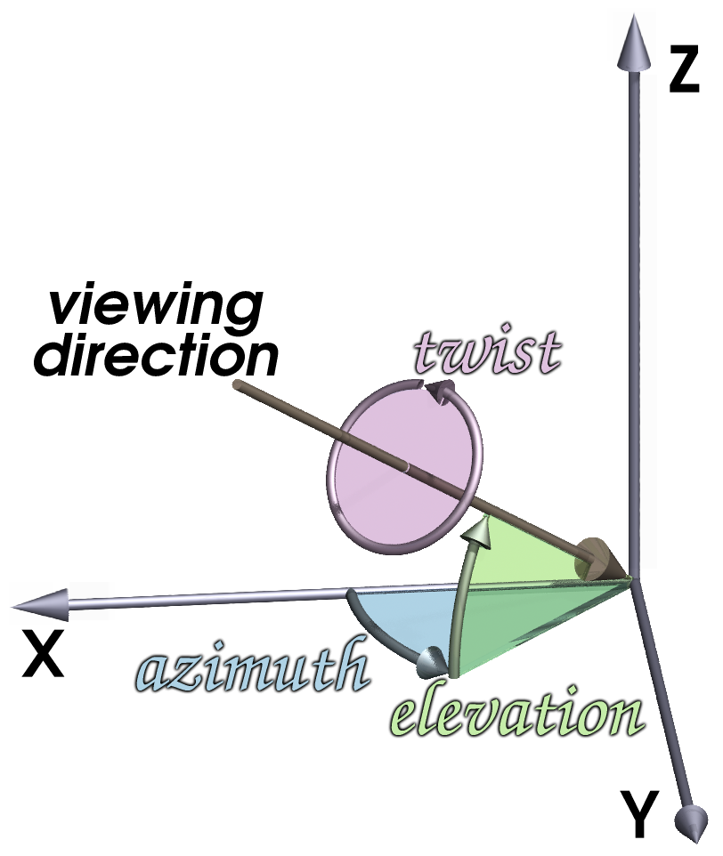

AsciiDoc Examples
- 1. Monospace and application
- 2. Organization
- 3. Path and command
- 4. Gui labels
- 5. Inline markup inside a literal block
- 6. Prompt and user input (
[in]) - 7. Source code example
- 8. Explaining the usage of a command with a table
- 9. Another, more complex table
- 10. Tables can be used to neatly display images
- 11. Using a table to explain the usage of a command
- 12. Another table that explains some options
- 13. Using bibliography references
- 14. Another table example
- 15. Another way for explaining a command
- 16. Displaying the info of a book or article
- 17. Explaining the usage of a command with definition lists
- 18. A manual page example
These examples demonstrate some styles and patterns that are used in the BRL-CAD docs. They might help new doc writers and contributors by suggesting them what can be used, but they are not meant to be complete or restrictive.
1. Monospace and application
The `oed` command in [app]`MGED` is used to ...The oed command in MGED is used to …
2. Organization
Notable aerospace firms and support organizations that use FASTGEN
include [org]_Lockheed Martin_, [org]#Boeing#, [org]`Bell Helicopter`
, [org]*Northrop Grumman* , [org]_Pratt & Whitney_ , [org]_General
Electric_ , [org]_KETRON_ , [org]_ITT_ , [org]_BAH_ , [org]_SURVICE
Engineering_ , and [org]_ASI_ .Notable aerospace firms and support organizations that use FASTGEN
include Lockheed Martin, Boeing, Bell Helicopter
, Northrop Grumman , Pratt & Whitney , General
Electric , KETRON , ITT , BAH , SURVICE
Engineering , and ASI .
3. Path and command
-
[path]`input.asc` is a file created using [cmd]`g2asc`input.ascis a file created usingg2asc -
[cmd]`draw sph1.s kbd:[Enter]`draw sph1.s EnterFor kbd:[]macro to work, you need to add the attribute:experimental:at the top of the page. -
`[cmd]*g2asc* < [path]#input.g# > [path]#output.g#`g2asc < input.g > output.g
4. Gui labels
The following list provides a description of the use and functionality
of the primary elements in the dialog box.
* [label]#Output File Name# -- This is the name of the file to receive
the ASCII output.
* [label]#Log File Name# -- If provided, verbose status logging will
be written to that file.The following list provides a description of the use and functionality of the primary elements in the dialog box.
-
Output File Name — This is the name of the file to receive the ASCII output.
-
Log File Name — If provided, verbose status logging will be written to that file.
5. Inline markup inside a literal block
[subs="+quotes"]
....
[prompt]#mged># [cmd]#l tire#
[output]#tire: --
u tire-215-55R17.r
u air-215-55R17.r
u wheel-215-55R17.r#
....mged> l tire tire: -- u tire-215-55R17.r u air-215-55R17.r u wheel-215-55R17.r
The attribute [subs="+quotes"] is an instruction for replacing
(substituting) the quoted strings inside the block.
|
6. Prompt and user input ([in])
[subs="+quotes,+macros"]
....
[prompt]#Enter X, Y, Z of vertex:# [in]#0 0 0# kbd:[Enter]
[prompt]#Enter X, Y, Z of height (H) vector:# [in]#0 0 3.5# kbd:[Enter]
[prompt]#Enter radius:# [in]#1.75# kbd:[Enter]
....Enter X, Y, Z of vertex: 0 0 0 Enter Enter X, Y, Z of height (H) vector: 0 0 3.5 Enter Enter radius: 1.75 Enter
7. Source code example
[source,c]
----
struct rt_wdb *wdbp;
if( (wdbp=wdb_fopen( new_file_name ) ) == RT_WDB_NULL ) {
bu_exit(1, "Failed to open output file (%s)\n", new_file_name);
}
----struct rt_wdb *wdbp;
if( (wdbp=wdb_fopen( new_file_name ) ) == RT_WDB_NULL ) {
bu_exit(1, "Failed to open output file (%s)\n", new_file_name);
}8. Explaining the usage of a command with a table
[%header, cols="^,^", frame="all"]
|===
|draw
|sph1.s
|Draw a previously created primitive shape
|named sph1.s
|===| draw | sph1.s |
|---|---|
Draw a previously created primitive shape |
named sph1.s |
9. Another, more complex table
[%header, cols="10*^~", frame="all"]
|===
|in
|?
|rcc
3+|?
3+|?
|?
.2+|Insert a primitive shape
.2+|Name of shape
.2+|Type of shape is a right circular cylinder
|Value of x
|Value of y
|Value of z
|Value of x
|Value of y
|Value of z
.2+|Radius of rcc
3+|Vertex
3+|Height vector
|===| in | ? | rcc | ? | ? | ? | ||||
|---|---|---|---|---|---|---|---|---|---|
Insert a primitive shape |
Name of shape |
Type of shape is a right circular cylinder |
Value of x |
Value of y |
Value of z |
Value of x |
Value of y |
Value of z |
Radius of rcc |
Vertex |
Height vector |
||||||||
10. Tables can be used to neatly display images
10.1. Resize and center an image
[cols="^a", frame="none"]
|===
|
.Azimuth, Elevation, and the xyz Coordinate System
image::lessons:mged/02_coordsys.png[width=35%]
|===

Figure 1. Azimuth, Elevation, and the xyz Coordinate System
|
10.2. Display 2 images on cells of equal size
[cols="2*^.<a", frame="none"]
|===
|
.Zoom In to View Details (small size of view)
image::lessons:mged/02_flower_zoomin.png[width=400]
|
.Zoom Out to View Object in Relation to Environment (large size of view)
image::lessons:mged/02_flower_zoomout.png[width=400]
|===Figure 2. Zoom In to View Details (small size of view)
|

Figure 3. Zoom Out to View Object in Relation to Environment (large size of view)
|
11. Using a table to explain the usage of a command
.Usage of MGED's gdiff utility
[cols="2*~", frame="none", options="noheader"]
|===
2+| Usage: `[cmd]#gdiff# +++[+++[opt]#OPTION#]... [rep]#obj1# [rep]#obj2#`
|[opt]`--tol=#`, [opt]`-t#`
|Tolerance in millimeters.
|[opt]`--ray-diff`, [opt]`-R`
|Test for differences with raytracing.
|[opt]`--view-left`, [opt]`-l`
|Visualize volumes added only by left object.
|[opt]`--view-both`, [opt]`-b`
|Visualize volumes common to both objects.
|[opt]`--view-right`, [opt]`-r`
|Visualize volumes added only by right object.
|[opt]`--grazing`, [opt]`-G`
|Report differences in grazing hits (raytracing mode).
|===Usage: |
|
|
Tolerance in millimeters. |
|
Test for differences with raytracing. |
|
Visualize volumes added only by left object. |
|
Visualize volumes common to both objects. |
|
Visualize volumes added only by right object. |
|
Report differences in grazing hits (raytracing mode). |
12. Another table that explains some options
.STL reader options
[cols="2*~", frame="none"]
|===
|`--binary`
|Specify that the input file is in binary STL format (the default
assumes ASCII).
|[nowrap]`--starting-ident=[rep]#number#`
|Specify the starting ident for the regions created. The default is
`1000`. This number will be incremented for each region, unless
`--constant-ident` is specified.
|`--constant-ident`
|Specify that the starting ident should remain constant.
|`--material=[rep]#code#`
|Specify the material code that will be assigned to all created
regions (the default is `1`).
|===
|
Specify that the input file is in binary STL format (the default assumes ASCII). |
|
Specify the starting ident for the regions created. The default is
|
|
Specify that the starting ident should remain constant. |
|
Specify the material code that will be assigned to all created
regions (the default is |
Because the columns of the table have flexible widths, it is
possible that the options' column is too narrow and the option lines
are broken. To prevent this we are using [nowrap] for the longest
option.
|
13. Using bibliography references
The COMGEOM target descriptions are processed by the Geometric
Information For Targets (GIFT <<r1>>,<<r2>>) code for use in follow-on
vulnerability assessment codes.
[bibliography]
.References
* [[[r1, 1]]] Lawrence W. Bain, Mathew J. Reisinger, "The GIFT Code User
Manual; Vol I, Introduction and Input Requirements," BRL
Report No. 1802, July 1975. (AD# B0060371)
* [[[r2, 2]]] Gary G. Kuehl, Lawrence W. Bain, Mathew J. Reisinger, "The
GIFT Code User Manual; Vol II, the Output Options," ARRADCOM Technical
Report No. ARBRL-TR-02189, September 1979. (AD# A078364)The COMGEOM target descriptions are processed by the Geometric Information For Targets (GIFT [1],[2]) code for use in follow-on vulnerability assessment codes.
-
[1] Lawrence W. Bain, Mathew J. Reisinger, "The GIFT Code User Manual; Vol I, Introduction and Input Requirements," BRL Report No. 1802, July 1975. (AD# B0060371)
-
[2] Gary G. Kuehl, Lawrence W. Bain, Mathew J. Reisinger, "The GIFT Code User Manual; Vol II, the Output Options," ARRADCOM Technical Report No. ARBRL-TR-02189, September 1979. (AD# A078364)
14. Another table example
[%header, cols="^h,~", frame="all"]
|===
|Event
|Description
|r
|*Ray*. A ray is cast. The formatting associated with r will print
regardless of whether a region is encountered.
|h
|*Header*. First output after a ray hits anything. Formatting at
*h* is output once per ray.
|p
|*Partition*. Output for each region encountered by the ray.
Typically this will be where most of the information about a model is
reported.
|f
|*Footnote*. Last output statement after a ray hits anything; a
"footnote" line after the ray has completed its evaluations; once
per ray.
|g
|*Gap*. Output written once for each gap the ray may encounter.
|m
|*Miss*. If triggered, prints a message that nothing was hit;
maximum once per ray.
|o
|*Overlap*. Output written once for each overlap along the
ray.
|===| Event | Description |
|---|---|
r |
Ray. A ray is cast. The formatting associated with r will print regardless of whether a region is encountered. |
h |
Header. First output after a ray hits anything. Formatting at h is output once per ray. |
p |
Partition. Output for each region encountered by the ray. Typically this will be where most of the information about a model is reported. |
f |
Footnote. Last output statement after a ray hits anything; a "footnote" line after the ray has completed its evaluations; once per ray. |
g |
Gap. Output written once for each gap the ray may encounter. |
m |
Miss. If triggered, prints a message that nothing was hit; maximum once per ray. |
o |
Overlap. Output written once for each overlap along the ray. |
15. Another way for explaining a command
[[_percent]]
% :: Start a `/bin/sh` shell process for the user. The
[prompt]#mged># prompt will be replaced by a system prompt for the
shell, and the user may perform any legal shell commands. The `mged`
process waits for the shell process to finish, which occurs when the
user exits the shell. This only works in a command window associated
with a tty (i.e., the window used to start `mged` in classic mode).
+
.Example:
[subs="+quotes"]
....
[prompt]#mged># [in]#%# <1>
[prompt]#$# [in]#ls -al# <2>
[prompt]#$# [in]#exit# <3>
[prompt]#mged># <4>
....
<1> Start a new shell process.
<2> Issue any shell commands.
<3> Exit the shell.
<4> Continue editing in `mged`.- %
-
Start a
/bin/shshell process for the user. The mged> prompt will be replaced by a system prompt for the shell, and the user may perform any legal shell commands. Themgedprocess waits for the shell process to finish, which occurs when the user exits the shell. This only works in a command window associated with a tty (i.e., the window used to startmgedin classic mode).Example:mged> % (1) $ ls -al (2) $ exit (3) mged> (4)
1 Start a new shell process. 2 Issue any shell commands. 3 Exit the shell. 4 Continue editing in mged.
16. Displaying the info of a book or article
****
[cols=">h,<", frame="all"]
|===
| AUTHORS:
| Lee A. Butler +
Eric W. Edwards +
Betty J. Schueler +
Robert G. Parker +
John R. Anderson
| ORGANIZATION:
| *U.S. Army Research Laboratory* +
Aberdeen Proving Ground, MD 21005-5068
| REPORT:
| ARL-SR-102 +
April 2001
|===
****17. Explaining the usage of a command with definition lists
The g-dxf command converts BRL-CAD objects to the previously mentioned
AutoCAD DXF format. The syntax for this command is as follows:
`[cmd]*g-dxf* +++[+++[opt]_options_] [rep]#input.g# object(s)`
The options for the g-dxf command are as follows:
[opt]`-i` :: requests the output DXF file to be in inches (default is
millimeters).
[opt]`-o [rep]#output.dxf#` :: specifies the file to receive
the DXF output (default is stdout).
[opt]`-p` :: requests that the output DXF file consist of POLYFACE
MESH entities (the default is 3DFACE entities).
The command also accepts the [opt]`-v`, [opt]`-r`, [opt]`-a`,
[opt]`-n`, [opt]`-x`, and [opt]`-X` options, which have been discussed
in the import converters portion of this document
(xref:tutorials:converting/chapter4.adoc#_sec_convert_to_brlcad[Converting
to BRL-CAD]).The g-dxf command converts BRL-CAD objects to the previously mentioned AutoCAD DXF format. The syntax for this command is as follows:
g-dxf [options] input.g object(s)
The options for the g-dxf command are as follows:
-i-
requests the output DXF file to be in inches (default is millimeters).
-o output.dxf-
specifies the file to receive the DXF output (default is stdout).
-p-
requests that the output DXF file consist of POLYFACE MESH entities (the default is 3DFACE entities).
The command also accepts the -v, -r, -a,
-n, -x, and -X options, which have been discussed
in the import converters portion of this document
(Converting
to BRL-CAD).
18. A manual page example
include::../header.adoc[]
= B(nged)
== NAME
B - Clears the mged display of any currently displayed objects, then
displays the list of objects provided in the parameter list.
== SYNOPSIS
*B* +[+[-A -o] | _attribute name_ {_value_}...] [-s] [-C +#/#/#+] [-R] [_objects_]
== DESCRIPTION
Clears the mged display of any currently displayed objects, then
displays the list of objects provided in the parameter
list. Equivalent to the [cmd]*Z* command followed by the command
[cmd]*draw* _<objects>_. The _-C_ option provides the user a way to
specify a color that overrides all other color specifications
including combination colors and region id-based colors. The _-A_ and
_-o_ options allow the user to select objects by attribute. The _-s_
option specifies that subtracted and intersected objects should be
drawn with solid lines rather than dot-dash lines. The -R option means
do not automatically resize the view if no other objects are
displayed. See the [cmd]*draw* command for a detailed description of
the options.
== EXAMPLES
The following are run from the MGED command prompt.
.Display a named object
====
[prompt]#mged># [ui]`B some_object`
The display clears, and the object named _some_object_ is displayed.
====
.Draw objects having an attribute with a value
====
[prompt]#mged># [ui]`B -A -o Comment {First comment} Comment {Second comment}`
The display clears, then draws objects that have a "Comment" attribute
with a value of either "First comment" or "Second comment."
====
== AUTHOR
BRL-CAD Team
include::../footer.adoc[]See it rendered at: B(nged)
The asciidoc markup in a man page is kind of restricted. For
example the SYNOPSIS has to start with a star (*), otherwise
asciidoctor will fail to generate the man page. The markup that is
used in this example can generate both a nice man page and a nice
HTML representation of the man page.
|